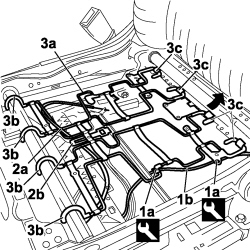
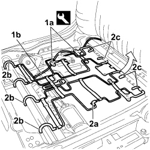

7045D19 FRONT SEAT CUSHION SPRINGING (ONE), LH OR RH - R R WITH COATING TAKEN OFF
- Path
- Procedures > 70 FITTINGS > 7045 FRONT SEATS > 7045D FRONT SEAT TRIM/PADDING > 7045D19 FRONT SEAT CUSHION SPRINGING (ONE), LH OR RH - R R WITH COATING TAKEN OFF
- Kind
- repair procedure (removal / refitting; the operation number is the code)
- Applies to
- all engines; all production periods; only with equipment: ELECTRIC SEATS
- Interactive page
- https://sloeber94.github.io/elrnDB-fCrm/en/#/194001127
Applies to: all engines; all production periods
 Removing
Removing
 Refitting
Refitting1. Using the special tool, release the retaining buttons (1a) and detach the electrical wiring (1b) from the cushion springs.
Tool | Description | Function | Validity |
|---|---|---|---|
1878077000 | Knife | Retainer removal |
2. Release the seat sliding control cable (2a) from the retaining mounting (2b) for the cushion springs.
3. Release the cushion springs (3a) lifting them up at the front points (3b), then release them from the rear points (3c) and remove them from the seat frame.

Applies to: all engines; all production periods
Refitting
Removing- Attach the cushion springs to the rear part of the seat frame and fit them to the front part.
- Fit the electrical wiring retaining buttons and attach the seat sliding control cable.
Applies to: all engines; all production periods; only with equipment: ELECTRIC SEATS
Removing
Refitting1. Using the special tool, release the retaining buttons (1a) and detach the electrical wiring (1b) from the cushion springs.
Tool | Description | Function | Validity |
|---|---|---|---|
1878077000 | Knife | Retainer removal |
2. Release the cushion springs (2a) lifting them up at the front points (2b), then release them from the rear points (2c) and remove them from the seat frame.

Applies to: all engines; all production periods; only with equipment: ELECTRIC SEATS
Refitting
Removing- Attach the cushion springs to the rear part of the seat frame and fit them to the front part.
- Fit the electrical wiring retaining buttons to the cushion springs.